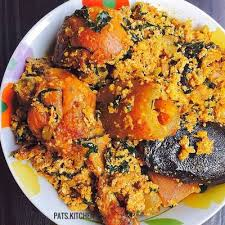

Egusi Soup

Description
This is one of the most delicious Nigerian dishes you'd ever come across
Ingredients
- Egusi (melon seeds) - ground
- Palm oil
- Vegetables - Spinach, Ugu (Fluted pumpkin leaves), or bitter leaves
- Protein - beef, goat meat, chicken, or whatever meat you prefer
- Fish - smoked fish, stockfish, dried fish
- Crayfish - ground
- Stock cubes - for seasoning
- Pepper - Fresh pepper or dry ground pepper
- Onions - chopped
- Salt - to taste
- Optional - Locust beans, periwinkle, and prawns (fresh or dried)